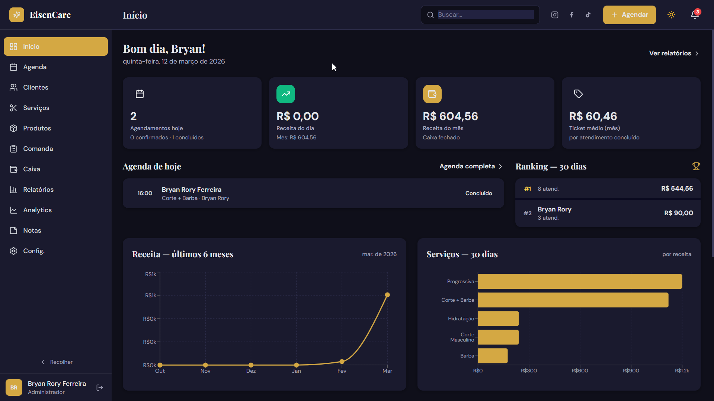

EC
EisenCare
Plataforma SaaS para gestão de barbearias, focada em agendamento online, organização operacional e redução de faltas. Sistema completo com painel administrativo, controle de agenda e notificações automáticas.
// projetos
Produtos e sistemas que desenvolvi ao longo da carreira.

Plataforma SaaS para gestão de barbearias, focada em agendamento online, organização operacional e redução de faltas. Sistema completo com painel administrativo, controle de agenda e notificações automáticas.